Розробив: Малярчук В.О.
Час виконання роботи 4 год
Лабораторна робота № 7
Дослідження біполярного транзистора. Дослідження біполярного транзистора у режимі посилення гармонійних коливань
Ціль роботи
1. Дослідження біполярного транзистора (побудова сімейства вхідних та вихідних статичних характеристик).
2. Дослідити біполярного транзистора у режимі посилення гармонійних коливань.
Короткі теоретичні відомості
2.1. Основні поняття і класифікація підсилювачів
Електронні пристрої, що перетворюють вхідні електричні сигнали малої потужності в сигнали більшої потужності, називають електронними підсилювачами.
В процесі посилення малопотужний вхідний сигнал управляє енергією джерела живлення значно більшого рівня потужності.
Частина потужності джерела живлення, що віддається в навантаження, є вихідною потужністю підсилювача. Відношення цієї потужності до потужності вхідного сигналу називається коефіцієнтом посилення по потужності.
Як пристрої, що управляють під впливом малопотужного вхідного сигналу потужністю джерела живлення, використовуються елементи, що володіють підсилювальними властивостями (транзистор, електронна лампа і т.п). Структурна схема підсилювача показана на рис.1.
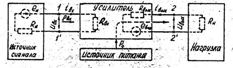
Рис.1. Структурна схема підсилювача
Сигнал, що підлягає посиленню, є напругою, що подається на вхід підсилювача (клеми 1.1') від джерела вхідного сигналу, який показаний у вигляді джерела, що характеризується ЕРС ен і внутрішнім опором Rн. Цей сигнал управляє потужністю джерела живлення. Енергія джерела живлення подається на опір навантаження, що підключається до виходу підсилювача (клеми 2. 2'). На виході створюється посилений сигнал. Його також можна представити у вигляді джерела з ЕРС евих і внутрішнім опором Rвих.
Підсилювачі прийнято класифікувати залежно від призначення, характеру зміни в часі вхідного сигналу і ін. Так, за призначенням розрізняють підсилювачі напруги, струму і потужності, хоча ця класифікація умовна, оскільки у всіх електронних підсилювачах відбувається посилення потужності. Робота підсилювача у вказаних режимах визначається співвідношенням опорів джерела вхідного сигналу підсилювача і навантаження. При Rвх>>Rн, а Rн>Rвих на виході підсилювача буде найбільша відносна зміна напруги. Такий підсилювач називається підсилювачем напруги.
Найбільший струм в опорі навантаження виникає, коли Rвх<< Rн, а Rн<< Rвих . Такий підсилювач називається підсилювачем струму.
Залежно від виду сигналів, що підсилюються, розрізняють підсилювачі гармонійних і підсилювачі імпульсних сигналів. Підсилювачі гармонійних сигналів повинні забезпечити рівномірне посилення складових спектру частот. При розробці імпульсних підсилювачів основна увага надається збереженню форми кривої сигналу, для чого, окрім рівномірного спектру посилення сигналу, необхідно, щоб окремі складові спектру частот сигналу при проходженні через підсилювач однаково зсовувалися в часі.
По характеру зміни в часі сигналу, що підсилюється, розрізняють підсилювачі змінного і підсилювачі постійного струмів. Підсилювачі постійного струму на відміну від підсилювачів змінного струму, здатні підсилювати сигнал нульової частоти. Підсилювачі змінного струму підрозділяються на підсилювачі низької і високої частот.
По ширині смуги частот, що підсилюються, розрізняють підсилювачі виборчі і широкосмугові. Виборчі підсилювачі забезпечують посилення електричних сигналів в діапазоні частот поблизу несучої частоти, тоді як широкосмугові характеризуються досить широким діапазоном частот, що включає дуже низькі і високі частоти.
У практиці для посилення сигналу використовуються підсилювачі, що складаються як з однієї, так і з декількох каскадів посилення. Перші каскади багатокаскадного підсилювача працюють при слабкому сигналі і називаються каскадами попереднього посилення. Вони призначені для підвищення рівня сигналу, достатнього для роботи вихідного каскаду, що одержав назву каскаду посилення потужності.
По вигляду зв'язків між каскадами розрізняють підсилювачі з RC зв'язком, трансформаторним, резисторно-трансформаторним і безпосереднім зв'язком.
2.2. Основні характеристики транзисторного підсилювача
Найважливішими параметрами, за допомогою яких описуються підсилювальні властивості транзисторного підсилювача, є величини, що характеризують його здатність підсилювати сигнал і ступінь спотворення цього сигналу. До них відносяться вхідні і вихідні опори-між вхідними затисками підсилювача для змінного сигналу:
Zвх = Uвх / Iвх
де Uвх, і Iвх - діюче комплексне значення відповідно напруги і струму на вході підсилювача.
Вихідний опір Zвих представляє собою опор між вихідними затисками підсилювача при відключеному опорі навантаження і відсутності вихідного сигналу.
Коефіцієнт посилення рівний відношенню сигналу, на виході підсилювача до сигналу на вході. Розрізняють коефіцієнти посилення по напрузі Кu, по струму Кi і по потужності Кр. Оскільки вихідний сигнал відрізняється від вхідного не тільки по значенню, але і по фазі, в загальному випадку коефіцієнт посилення є величиною комплексною
Кu = Uвих / Uвх = Кu • еЈφ; Кi =Iвих / Iвх; Кр = Рвих / Рвх
де φ - кут зсуву фаз між вихідним і вхідним сигналами.
Коефіцієнт посилення багатокаскадних підсилювачів
К= К1К2К3…Кn .
Наряду з коефіцієнтами посилення, що вимірюються в безрозмірних одиницях, широко використовуються коефіцієнти посилення, що вимірюються в логарифмічних одиницях - децибелах (дБ):
Кu (дб) =20 lg Кu ; Кi (дб) =20 lg Кi ; Кр (дб) =10 lg Кр.
Для багатокаскадних підсилювачів
К (дб) = К1 (дб) + К2 (дб) + К3 (дб) +…+ Кn(дб)
так як при використовуванні логарифмічних одиниць множення замінюється додаванням.
Коефіцієнт корисної дії підсилювача представляє собою відношенням вихідної потужності, що виділяється на опорі навантаження Rвих до потужності всіх джерел живлення Ро.
Властивості підсилювача зручно представляти за допомогою різних характеристик, основними з яких є амплітудно-частотна, фазочастотна і амплітудна.
Амплітудно-частотна характеристика (рис. 2) - залежність модуля коефіцієнта посилення від частоти сигналу, що підсилюється при постійному вхідному сигналі .
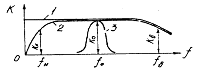
Рис. 2. Амплітудно-частотні характеристики типових підсилювачів;
1 - постійного струму; 2 - широкосмугового змінного струму;
3 - вибірного (резонансного)
Як видно з рис.2, модуль коефіцієнта посилення на різних частотах має різні значення. Це приводить до так званих частотних спотворень, які характеризуються коефіцієнтом частотних спотворень. Коефіцієнт частотних спотворень визначається як відношення модуля коефіцієнта посилення на середніх частотах до модуля коефіцієнта посилення на даній частоті:
М = Кс / Кf , або М(дб)= 20Lg M .
Частоти, при яких модуль коефіцієнта посилення зменшується в раз, тобто на 3 дБ, називається нижньою ƒн і верхньою ƒв граничними частотами, а діапазон частот між ними – смуга пропускання підсилювача (див. рис. 2).
Фазочастотна характеристика (рис.3,а) є залежністю фазового зсуву між вхідним і вихідним сигналами підсилювача від частоти. Фазовий зсув, як і нерівномірність посилення по частоті, обумовлюється наявністю реактивних елементів в підсилювачах. Ідеальна фазова характеристика є прямою лінією φ =ωτ , де τ - постійна, що виражає запізнення сигналу на виході підсилювача по відношенню до сигналу на вході і не залежна від частоти.
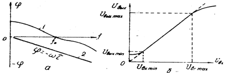
Рис.3. Фазочастотная (а) і амплітудна (б) характеристики:
1- реальна фазочастотная характеристика; 2- ідеальна
Фазові спотворення відсутні при нульовому зсуві фази на всіх підсилювачах частотах або у разі пропорційного збільшення фази із збільшенням частоти.
Фазові і частотні спотворення в підсилювачі називають лінійними, оскільки вони викликані лінійними реактивними елементами.
Амплітудна характеристика - залежність амплітуди (або діючого значення) вихідної напруги підсилювача від амплітуди (або діючого значення) напруги на вході на деякій постійній частоті (рис.3, б). У області невеликих значень вхідного сигналу ця характеристика є лінійною. При великих вхідних сигналах транзистори підсилювача працюють в режимі насичення і відсічення, що викликає порушення пропорційності між Uвх і Uвих. Все це приводить до появи нелінійних спотворень. Здатність підсилювача працювати при спотвореннях, що допускаються, характеризується його динамічним діапазоном
D = Uвх max / Uвх min , D(дБ)= 20 Lg D
де Uвх min - вхідна напруга, при якій забезпечується робота вихідного пристрою підсилювача (наприклад, динаміка); Uвх max - вхідна напруга, при якій спотворення сигналу не перевищує допустимого значення.
Нелінійні властивості підсилювача викликані нелінійністю характеристик підсилювального елементу - транзистора. В результаті нелінійних спотворень синусоїдний сигнал на вході підсилювача перетворюється на несинусоїдний сигнал на його виході.
Нелінійні спотворення оцінюються коефіцієнтом нелінійних спотворень
де Pk - потужність К-ї гармоніки на опорі навантаження.
2. 3. Підсилювальний каскад на схемі із загальним емітером (ЗЕ)
У різних пристроях промислової електроніки найчастіше застосовують підсилювальний каскад, виконаний по схемі із загальним емітером. Схема такого каскаду з використанням транзистора типу n-p-n показана на рис.4. При такому включенні транзистора емітер є загальним електродом між входом і виходом підсилювача. Для нормальної роботи п-р-п транзистора потрібно подати позитивну напругу на колектор і базу. Якщо в підсилювачі використовується транзистор типу n-p-n полярність джерела живлення Еk змінюють на протилежну. Сигнал, що підсилюється, подається між базою і емітером транзистора через розділовий конденсатор Ср1, що запобігає протіканню постійної складової струму через джерело вхідного сигналу під дією постійного базового струму зсуву.
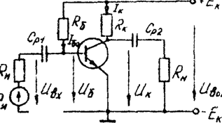
Рис.4. Схема підсилювального каскаду із загальним емітером
У колекторну гілку транзистора включений опір Rk, на якому виникають постійні і зміні складові падіння напруги. Зміна потенціалу колектора підводиться до опору навантаження Rн через конденсатор Ср2. Розділовий конденсатор Ср2 служить для виділення на виході підсилювача змінної складової посиленого сигналу.
Ємність конденсаторів Ср1 і Ср2 вибирають так, щоб на найнижній частоті, що підсилюється, можна було нехтувати їх опорами в порівнянні з вхідним опором і опором навантаження відповідно.
Режим роботи транзистора в підсилювачі вибирається так, щоб під час поступлення вхідних сигналів пропорційно змінювалися вихідні струми і напруги транзистора. Для цього до джерела підключений опір Rб, що визначає значення постійного струму вхідного кола Iоб.
Розглянемо процес посилення синусоїдального сигналу, користуючись вхідною і вихідною характеристиками транзистора (рис.5).
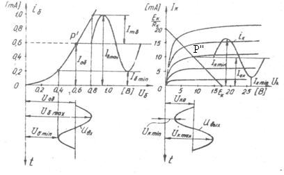
Рис. 5. Процес посилення синусоїдального сигналу схемою з ЗЕ
Очевидно, що напруга вхідного сигналу Uвх синфазно змінює струм бази. Зміна базового струму викликає пропорційні зміни струму колектора і напруги на колекторі. Для знаходження значень цих величин скористаємося рівнянням електричного стану колекторного кола, складеним по другому закону Кирхгофа:
Ек = Uk +Ik Rk , звідки напруга на колекторі Uk = Ек - Ik Rk .
Останньому рівнянню відповідає пряма, що називається лінією навантаження, яка будується на сімействі статичних вихідних характеристик транзистора. Лінію навантаження по постійному струму можна побудувати по двох точкам, які легко знаходяться при розгляді граничних режимів роботи транзистора. При Ik = 0, що відповідає Uk = Ек, визначається точка на осі абсцис, а при Ik = Ек / Rk , що відповідає Uk =0, знаходиться інша точка на осі ординат. Всі можливі значення струмів і напруг на транзисторі лежить в точках перетину кривих сімейств статичних вихідних характеристик з лінією навантаження по постійному струму. Вони не повинні виходити за максимально допустимі значення струму і напруги колектора і повинні обмежуватися кривою Рк max .
На рис.5,б показана лінія навантаження по постійному струму, а також криві iк і uk. Оскільки при збільшенні струму бази падіння напруги на опорі Rk збільшиться, потенціал колектора зменшиться. Це означає, що посилена синусоїдна вихідна напруга опиняється в протифазі з вхідною напругою. Тому говорять, що підсилювач про ЗЕ є інвертуючим. При посиленні імпульсного сигналу його полярність змінюється на протилежну.
Точка P'' перетину прямої навантаження із вихідною статичною характеристикою транзистора, яка залежить від початкового вхідного струму Iоб, називається початковою робочою точкою. При відсутність вхідного сигналу робочу точку називають точкою спокою, яка визначає струм Iок і напругу Uок спокою вихідного кола. Початковий вхідний струм або струм зсуву бази визначається опором Rб, значення якого можна розрахувати по формулі
Rб = (Ек - Uоб)/ Iоб ≈ Ek / Iоб
де Uоб , Iоб - відповідно початкова вхідна напруга і струм спокою. Схема, зображена на рис. 4, одержала назву схеми є фіксованим базовим струмом, оскільки базовий струм практично не залежить від параметрів транзистора. Цей спосіб зсуву відрізняється простотою схемного рішення і рядом інших переваг. Але він не може бути реалізований в умовах, коли зміни температури зовнішнього середовища значні і коли змінюються параметри з часом, а також при їх зміні.
Опис віртуальної лабораторної установки
Віртуальна лабораторна установка наведена на рис.7 і складається: із БТ VT1 n-p-n типу; джерела базової напруги +27 V; джерела колекторного живлення ЕК = 40V; дільника вхідної напруги R1, R2, що дозволяє плавно змінювати напругу UБ; потенціометра R7, що дозволяє змінювати напругу на колекторі транзистора; резистора R5 – навантаження колектора транзистора, яке за допомогою перемикача S3 можна відключити; перемикачів S1, S2, що комутують осцилограф; перемикача S4 для підключення до бази транзистора генератора синусоїдних коливань; перемикача S5 для підключення до бази транзистора опору R6 – для визначення значення початкового вхідного струму або струму зсуву бази; амперметра A1 і вольтметра V1 – для вимірів струму й напруги бази транзистора; амперметра A2 і вольтметра V2 для виміру струму й напруги колектора; вольтметра V3 для виміру напруги ЕК ; двопроменевого осцилографа для відображення вхідної й вихідної напруг; графопобудівника для отримання амплітудно-частотної та фазочастотної характеристик.
Домашнє завдання
- Вивчити схеми включення біполярних транзисторів і їх ВАХ.
- Вивчити методику побудови вхідних і вихідних статичних характеристик транзистора, навантажувальної прямої, вибору робочої точки й визначення h-параметрів.
Порядок виконання роботи
Виконання п.1 завдання:
1. Загрузити файл Вар_ФКС.xls в відповідності з своїм варіантом виписати значення величин.
2. Загрузити файл лаб_7.ewb (схема зображена на рис.6).
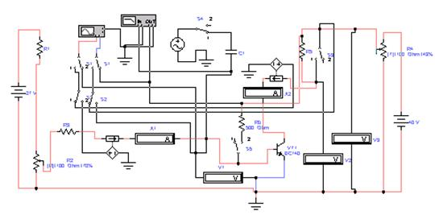
Рис. 6.
3. Побудова вольт-амперних характеристик.
3.1. Побудова вхідних ВАХ.
а). Підготувати лабораторну установку до роботи:
- перемикачі S1, S2, S3, S4, S5 привести в положення “1” за допомогою клавіш “1”, ”2”, ”3”, ”4” ,”5”;
– установити напругу на вольтметрі V3 ЕК= ЕК1 (згідно варіанту завдання) реостатом R4 (клавіша “Т”).
– установити R2= R2 мах Ом (що відповідає ≈100%) (клавіша R).
б). Виставити на осцилографі наступні параметри (в методичці значення виставлених параметрів на приладах приведено для одного із варіантів завдання):
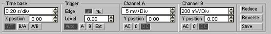
в). Включити лабораторну установку на моделювання, клацнувши лівою кнопкою мишки на кнопку “ 0-1”. Змінити значення вхідної напруги UБЕ від UБЕ =0 до UБЕ= UБЕ мах на вольтметрі V1 за допомогою потенціометра R2 (клавіша “r”). Виключити установку, перевівши перемикач “ 0-1” мишкою в положення “0”, отримавши на екрані осцилографа вхідну характеристику транзистора зняту при напрузі UК= ЕК1 (вхід А – зміна струму, вхід В – зміна напруги в залежності від часу).
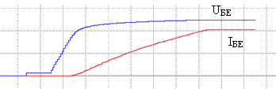
г). Відкрити аналізатор графіків “Analysis Graphs”. Для цього клацнути лівою кнопкою мишки по кнопці 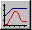 у верхній лінійці екрана. Потім клацнути лівої кнопки мишки по піктограмі
“Graph Properties” у верхній лінійці аналізатора й установити відповідні значення для масштабування отриманих характеристик:
Left Axis
Right Axis
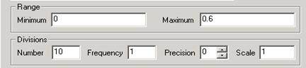
Bottom Axis
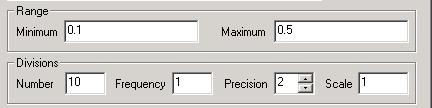
Клацнути лівою кнопкою мишки по кнопці “OK”. На аналізаторі буде зображена залежність зміни напруги та струму на вході транзистора від часу. Лівою кнопкою мишки клацнути по кнопці “Координатна сітка” .
д). Занести отримані результати в таблицю та Побудувати вхідну статичну характеристику транзистора IБ=f(UБ) (UK=const) у масштабі. Закрити аналізатор графіків.
е) .Установити напругу ЕК= ЕК2 с допомогою потенціометра R4 (клавіша ”T”). Повторити пункти б-д і домалювати на цьому ж графіку другу вхідну характеристику.
ж).Установити напруга ЕК= ЕК3 с допомогою потенціометра R4 (клавіша ”T”). Повторити пункти б-д і домалювати на цьому ж графіку третю вхідну характеристику.
3.2.. Побудова вихідні ВАХ.
а). Підготувати лабораторну установку до продовження роботи:
– перемикач S2 перевести в положення “2” за допомогою клавіші “2”.
б). Установити колекторну напругу UK=0 за допомогою резистора R4 (клавіша “T”). Включити лабораторну установку на моделювання. Установити струм бази IБ≈ IБ1 (згідно варіанту завдання) резистором R2 (клавіша R), контролюючи струм бази амперметром A1. Змінити значення UК потенціометром R4 від UК =0 V до UК =40 V (клавіша “T”). Виключити лабораторну установку.
в). Використовуючи аналізатор графіків Analysis Graphs замалювати вихідну характеристику.
г). Установити резистором R2 струм бази IБ≈ IБ2. Повторити пункти б-в і домалювати до цього ж графіку другу вихідну характеристику.
д). Установити резистором R2 струм бази IБ≈ IБ3. Повторити пункти б-в і домалювати до цього ж графіку третю вихідну характеристику.
Виконання п.2 завдання:
1.Побудувати навантажувальну пряму на сімействі вихідних характеристик по двом точкам (див. короткі теоретичні відомості).
2.Дослідити БТ у режимі посилення гармонійних коливань:
– визначити початковий вхідний струм або струм зсуву бази Iоб (див. рис.5) для середини лінійної ділянки вхідної статичної характеристики транзистора при ЕК=ЕК2;
– визначати опір Rб, значення якого можна розрахувати по формулі
Rб = (Ек - Uоб)/ Iоб ≈ Ek / Iоб
де Uоб , Iоб – відповідно початкова вхідна напруга і струм спокою;
- перемикач S1 перевести в положення “2” за допомогою клавіші “1”;
- перемикач S5 перевести в положення “2” за допомогою клавіші “5”;
– встановити: ЕК=ЕК2 (клавіша “T”); UБ – рівне UБ в середині лінійної ділянки вхідної характеристики при ЕК=ЕК2 (точка Р' див. рис.5), за допомогою клавіші “R”;
– розраховану величину опору Rб;
– двічі клацнути лівою кнопкою мишки на піктограмі генератора синусоїдних коливань і перевірити, щоб амплітуда коливань була UВХ= 13mV і f ≈ 1Кгц;
– закрити генератор і підключити його до вхідного ланцюга БТ, перемкнувши S4 за допомогою клавіші “4” у положення “2”.
– включити лівою кнопкою мишки перемикач моделювання “ 0-1” у положення “1”. На екрані осцилографа з'явиться тимчасова діаграма. Нажати мишкою кнопку "Pause", при цьому зображення на екрані осцилографа зупиниться.
3. Перемалювати в масштабі осцилограму вхідної й вихідної напруг. Зверніть увагу на фазу вхідної й вихідної напруг. За допомогою вертикальних візирних ліній визначити амплітуди вхідної UБ і вихідної UK напруг. Використовуючи аналізатор графіків побудувати АЧХ та ФЧХ.
4.Виключити осцилограф і вимикач моделювання встановити в положення “0”.
Зміст звіту
Звіт повинен бути оформлений на аркушах паперу й містити:
1.Ціль роботи й номер варіанта.
2.Принципову схему віртуальної лабораторної установки.
3. Вхідні та вихідні статичні характеристики транзистора.
4.Розрахунки та побудована навантажувальна пряма.
5. Визначені робочі точки та значення напруг та струмів на вхідних та вихідних статичних характеристиках
6.Осциллограмы вхідної й вихідної напруг.
7. АЧХ та ФЧХ.
8.Висновки, що базуються на аналізі отриманих результатів.
Контрольні питання
1.Що таке БТ і його структура?
2.Намалюйте УГП БТ p-n-p і n-p-n типу.
3.Які схеми включення БТ ви знаєте?
4.Що таке вхідна й вихідна ВАХ БТ?
5.Що таке навантажувальна пряма і як вона будується?
6.Що таке h-параметри БТ і як вони обчислюються?
7.Побудуйте на вхідних і вихідних характеристиках епюри струмів і напруг БТ.
Список літератури
1. Пасинків В.В., Чиркин Л.К. Напівпровідникові прилади. - М.: Вища шк., 1987. - 264с.
2. Андрєєв В.И., Чмут В.П., Ефимец В.Н. Електроніка, керівництво до лабораторних робіт. - К.: КИИГА, 1977. - 60с.
3. Медведенко Б.И., Нікітін А.П. Електронні прилади. Лабораторні роботи 1-1- 8. - К.: КИИГА, 1993. - 85с.